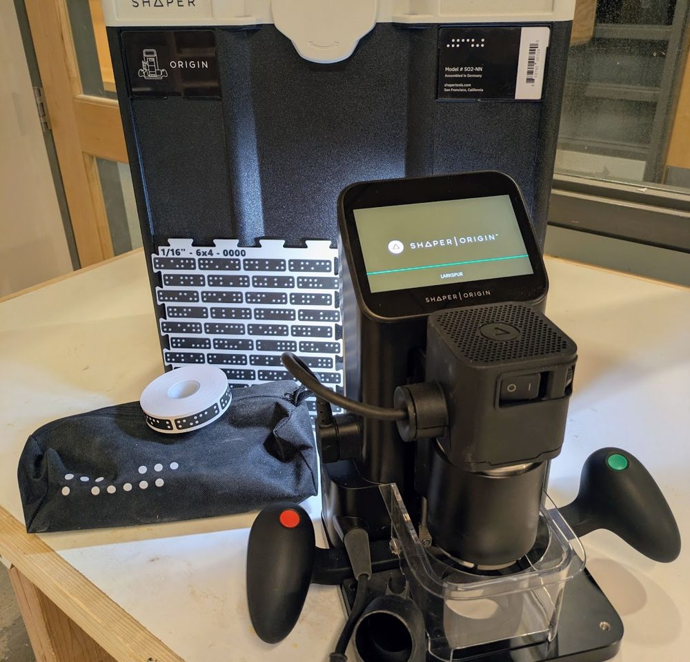

CNC
CNC equipment and materials are labeled BLUE.
Everybody: A brief training is required before using the Shaper CNC.
Students: Help with the Shaper for class assignments should come from your class LAs or TAs first, then the Mischief Makers if available.
Faculty: Class assignments requiring the Shaper should be coordinated by LAs, TAs, or instructors. Questions: zack.weaver@colorado.edu

Shaper Origin
Thanks to generous support, BTU purchased a Shaper Origin CNC router in 2026.
Basic operation of the Shaper is covered in this video.
The Shaper is a precision (expensive) tool. Please contact Zack at zack.weaver@colorado.edu to get started.